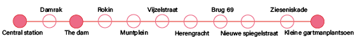

City walk
Time 30 minutes
Distance 2,8 km
The central station
The central station of Amsterdam was build between 1881 and 1889 by the architects A.L. van Gendt, P.J.H Cuypers and L.J. Eijmer. Today it is one of the busiest stations in the read more
The Dam
The Dam is the historic heart of the city. On the Dam is one of the magnificent buildings the royal palace. It was build between 1648 and 1665 as the government house. The architect that designed the building was Jacob van read more
Hirsh building
The Hirsch building is a monumental building on the Leidseplein and the kleine-gartmanplantsoen. The design is from A.Jacot and Jan Gerard as buildings expert. The plans for a new building was made in 1910 and the official opening was read more